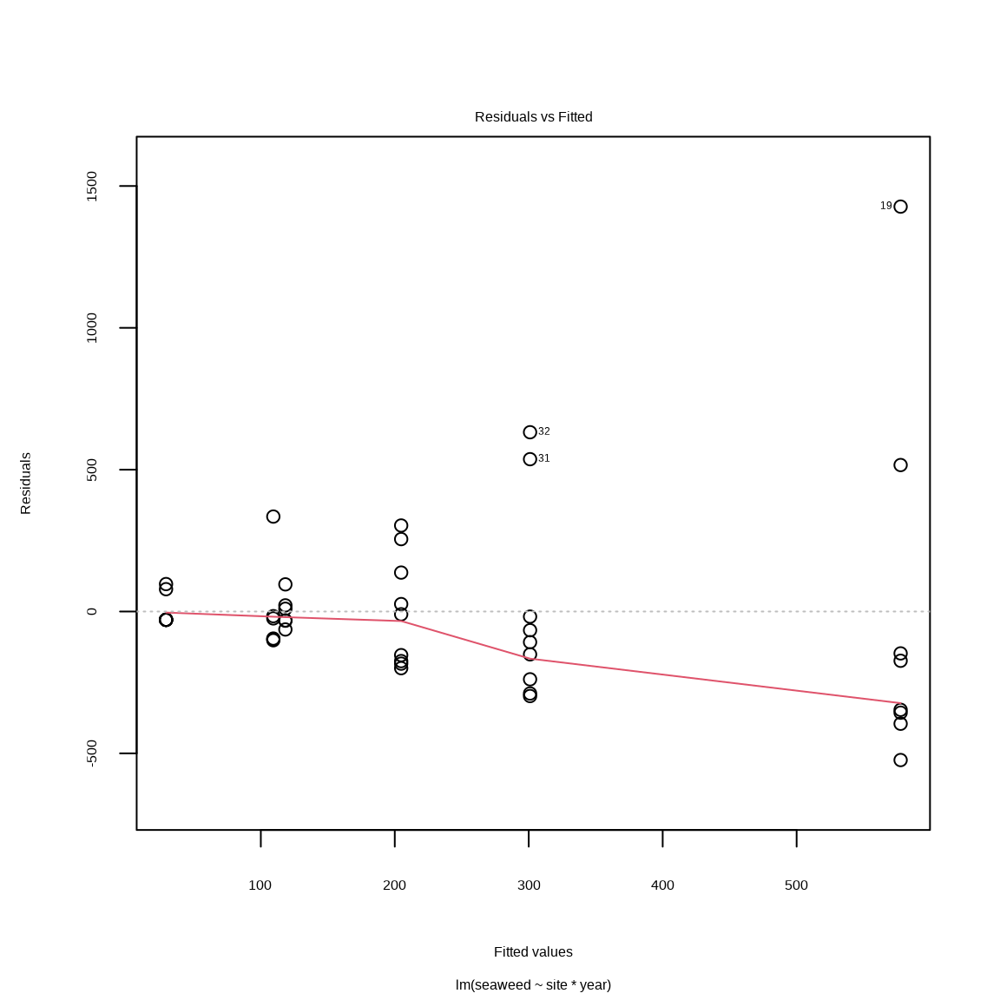
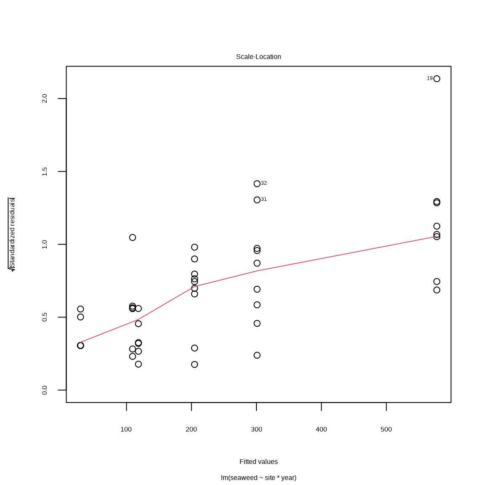

8 等分散性と正規性の事後確認
plot() に渡している mall は前章に当てはめた二元配置分散分析のモデルです。
8.1 等分散性の確認に使うプロット
plot(mall, which = 1)

Figure 8.1: 残渣 vs. 期待値
Fig. 8.1 は残渣15 と期待値16 の関係を理解するてめに使います。 等分散性に問題がない場合、残渣は y = 0 の周りを均一に、変動なくばらつきます。 ところが Fig. 8.1 の場合、期待値が高いとき、残渣のばらつきが大きい。
plot(mall, which = 3)

Figure 8.2: スケール・位置プロット
Fig. 8.2 はスケール・ロケーションプロットといいます。 スケール17 は確率密度分布のばらつきのパラメータです。 位置（ロケーション）18 は確率分布の中心のパラメータです。 たとえば、正規分布のスケールパラメータは分散、位置パラメータは平均値です。 Fig. 8.2 の横軸は位置、縦長はスケールパラメータで標準化した残渣の平方根です。 示されている標準化残渣のばらつきが均一で、期待値19 と無関係であれば、ばらつきは均一であると考えられます。 Fig. 8.2 の場合、標準化残渣は期待値と正の関係があるので、ばらつきは均一であると考えられません。